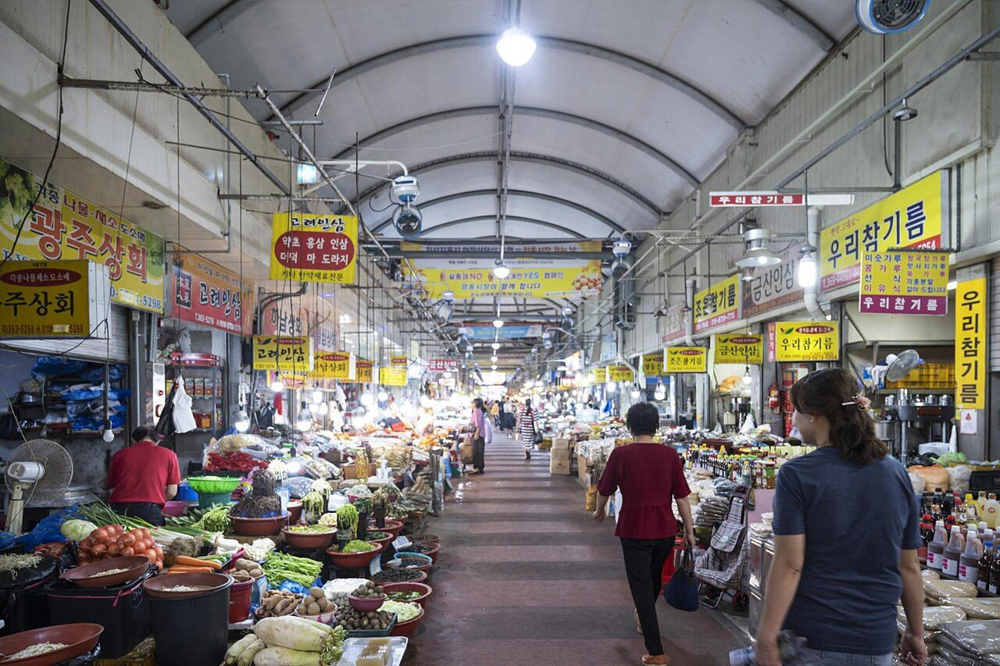
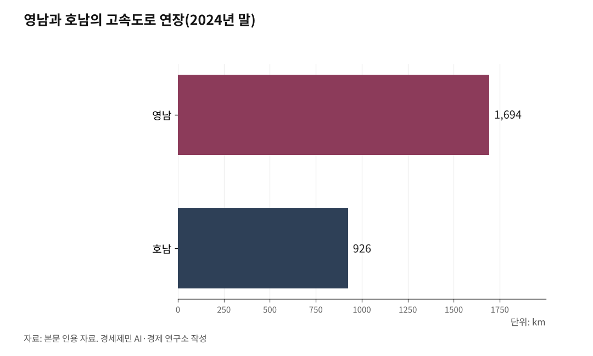

통계로 본 영·호남 격차, '역차별'은 어디에 있나
산업화 60년, 국가산단과 고속도로가 경부축에 놓였다
컨테이너 12배 연구개발비 2.8배, 결과는 인구와 GRDP 격차로 남았다
이건 영남 대 호남이 아니라 수도권 일극의 문제다
AI경제저널=김갑봉 기자 | 2026년 6월 29일 삼성전자와 SK하이닉스가 서남권(전남·광주)에 반도체 클러스터를 짓겠다고 밝혔다. 이재용 삼성전자 회장과 최태원 SK 회장이 직접 나섰다. 두 회사는 800조원을 들여 메모리 반도체 공장 4기를 짓는다.

발표가 나오자 '영남 역차별' 논란이 일었다. 그러나 통계를 펴면 화살은 반대쪽을 가리킨다. 지난 60년 국가 투자는 도로와 철도, 항만과 공항, 산업단지와 연구개발에서 경부축을 따라 영남으로 흘렀다. 편중을 숫자로 짚고, 왜 그 격차가 생겼는지 살핀다.
논란의 출발
국민의힘 대구·경북 의원 25명이 6월 24일 회견을 열었다. 서남권 반도체를 "영남 역차별"이라며 원점 재검토를 요구했다. 부산·울산·경남 의원들도 6월 30일 회견에서 "지역차별"이라며 생산 거점 검토 자료를 공개하라고 했다.
반대 논리는 세 갈래다. 영남 역차별, 기업 자율 침해, 주주 충실의무 훼손이다. 다만 같은 당 홍준표 전 대구시장은 "입지 조건만 되면 호남에 가는 것을 반대하지 않는다"고 결을 달리했다. 진영이 한목소리를 낸 것도 아니다.

경부축에 놓인 60년
편중은 산업화 초기부터 시작됐다. 1962년 경제개발계획 뒤 중화학공업 거점이 경부축을 따라 영남에 들어섰다. 1973년 포항제철이 첫 고로에 불을 댕겼고 울산 조선·석유화학, 구미 전자, 창원 기계가 뒤를 이었다.
울산은 1960년대 정유·조선 기지로, 구미는 전자, 창원은 기계공업 기지로 국가가 지정했다. 호남에는 그런 국가 지정 공업기지가 없었다. 광양제철소가 들어선 1980년대까지 같은 급 거점이 오지 않았다.
간선도로도 같은 길을 걸었다. 1970년 완공한 경부고속도로에 약 429억원이 들었고, 251.8km 호남고속도로에는 약 238억원이 들었다. 경부고속도로는 4차로로 놓였지만 호남고속도로는 2차로로 깔렸다가 뒤늦게 넓혔다. 시작점의 이 차이가 뒷날 격차의 씨앗이 됐다.
인프라 격차
지금 남은 인프라도 영남에 몰렸다. 2024년 말 고속도로 연장은 영남 1694km, 호남 926km다. 영남이 1.8배 길다.
철도 격차는 더 크다. 경부고속선은 서울에서 부산까지 전 구간이 새 선로다. 호남고속선은 광주송정에서 목포 구간이 아직 개통되지 않았다. 영남은 동해선 광역전철과 대경선이 달리지만, 호남의 광주~나주 광역철도는 예비타당성조사에서 떨어져 운행하는 광역철도가 없다.
항만도 뚜렷하다. 2024년 컨테이너 물동량은 부산항 2440만TEU, 광양항 201만TEU다. 12배 차이다. 최근 국가투자도 경남 진해신항이 정부부문만 12조6379억원, 광양항 3-2단계 자동화부두는 7846억원이다.
공항은 부산 가덕도신공항 건설비가 13조4900억원, 전북 새만금국제공항이 8077억원이다. 17배 가까이 벌어졌다. 여객도 벌어졌다. 2024년 무안공항은 약 36만명에 그쳤고, 김해공항은 국제선만 약 900만명이었다.
신규 사업 배분도 갈렸다. 2019년 국가균형발전 프로젝트로 24조1000억원 규모 사업이 예비타당성조사를 면제받았다. 도로·철도만 보면 영남에 약 8조원, 호남에 약 1조8000억원이 갔다. 단일 최대 사업인 남부내륙철도(김천~거제) 4조7000억원이 영남으로 갔다.
산업과 연구개발
산업 기반도 영남이 앞선다. 2021년 10월 산업단지는 영남 441개, 호남 207개로 2.1배다. 영남은 울산·구미·창원·포항의 대규모 국가산단이 중심이고, 호남은 단지의 60%를 소규모 농공단지가 차지한다.
연구 자원도 기운다. 2024년 정부 국가연구개발비 지역 집행은 영남 4조7200억원, 호남 1조7100억원으로 2.8배다. 시도별로는 경남이 1조6000억원으로 가장 많고, 호남에서는 전북이 9000억원대로 앞선다.
첨단산업 거점도 그렇다. 국가첨단전략산업 특화단지는 영남 4곳, 호남 2곳이다. 방위산업 혁신클러스터는 영남 창원과 구미 2곳이지만 호남에는 없다. 반도체 축도 그동안 용인·평택 경인경제권(옛 수도권)과 구미 영남에 놓였다. 호남에는 반도체 특화단지가 없었고, 새만금 이차전지와 화순 바이오가 들어갔다.
결과로 남은 것
누적 투자는 인구와 경제 규모 격차로 남았다. 전남 인구는 1975년 325만명에서 2020년 179만명으로 45% 줄었다. 전국에서 가장 큰 감소폭이고 전북이 27%로 뒤를 이었다. 같은 기간 울산은 세 배로 늘었다.
지역내총생산도 그렇다. 2024년 경남은 약 151조원으로 비수도권에서 가장 크다. 반대로 호남 최대인 광주는 세종·제주 다음으로 작아 전국 최하위권이다. 경인경제권을 빼면 상위 세 곳이 모두 영남이다. 1인당 지역내총생산도 울산이 전국 최상위권이고 광주는 하위권이다.
격차는 우연이 아니다. 한 번 놓인 거점이 사람과 자본을 끌어당기고, 그 축적이 다음 축적을 불렀다. 경제지리학은 이를 누적적 인과라 부른다. 길이 산업을 부르고 산업이 다시 길을 부르는 동안, 거점 없는 호남은 뒤로 밀렸다. 나라를 먹인 곡창에 빈집이 늘었다.
그러나 이것도 사실이다
격차를 읽을 때 함께 봐야 할 사실도 있다. 첫째, 정부가 영남과 호남에 그동안 투자한 총액을 합산해 공표한 단일 통계는 없다. '몇 배'라는 누적 배수는 대리지표로 방향만 확인된다.
둘째, 영남 인구는 약 1236만명으로 호남 488만명의 2.5배다. 고속도로처럼 인구로 나누면 1인당 격차가 줄거나 뒤집히는 지표도 있다. 셋째, 가장 큰 격차는 영남과 호남 사이가 아니라 경인경제권과 지방 사이다. 철도망 밀도도 경인경제권이 1㎢당 0.97km, 지방은 0.31km다. 국가연구개발비도 대전과 서울에 절반 가까이 몰렸다.
넷째, 재정학 추계를 보면 1997년부터 2012년까지 전북과 전남의 사회간접자본 증가율은 전국 평균을 웃돌았다. 격차는 주로 산업화 초기에 벌어졌다. 다섯째, 영남 안에서도 명암이 갈린다. 1인당 소득은 울산이 높지만 대구와 부산은 전국 평균을 밑돈다. 여섯째, 호남에도 광양만권 석유화학·철강과 군산 자동차·조선 거점이 있다. 다만 반도체·전자 같은 첨단 주력에서 밀렸다.
분산과 분권은 다르다
격차 자체는 정부도 인정한다. 이재명 대통령은 6월 29일 산업화 시기 자원을 경인경제권과 영남에 집중했고 호남이 오래 소외됐다고 밝혔다. 이튿날 국무회의에서는 "역사적으로 누적된 투자량과 비교하면 조족지혈에 불과하다", "영·호남 차별이 있었던 건 분명한 사실"이라고 했다.
호남행을 시혜로 보기 어려운 근거도 있다. 한국은행은 거점도시에 집중 투자해 생산성을 끌어올리면 전국 국내총생산이 1.3% 는다고 분석했다. 경인경제권 위주로 개선할 때의 1.1%보다 높다. 거점을 지방에 두는 편이 나라 전체가 더 버는 길이라는 뜻이다. 반도체 산업도 전력과 용수를 수도권에서 더 구하기 어려워 새 거점을 찾던 참이었다.
국가 전략산업과 자산은 지방으로 분산할 수 있다. 이번 반도체 클러스터가 그런 분산이다. 분권은 그와 다른 층위다. 시설과 산업을 지방에 나누는 것이 분산이라면, 결정권과 재정을 지방에 넘기는 것이 분권이다. 정부는 5극3특, 곧 다섯 초광역 경제권과 세 특별자치로 산업 분산과 권한 분권을 함께 추진한다.
이 논란은 영남에서 빼앗아 호남에 주는 다툼이 아니다. 생산은 지방에서 나오지만 소득은 수도권으로 흘렀고, 영남 청년도 일자리를 좇아 서울로 떠났다. 대통령이 "수도권 일극체제 극복"이라 부른 문제가 그것이다. 서남권 반도체는 그 일극을 푸는 첫 시도다. 다만 아직 양해각서와 입지 후보 압축 단계다. 통계는 편중을 가리킨다. 그것을 특혜로 볼지, 함께 크기 위한 시정으로 볼지는 독자 몫이다.
※ 이 기사는 인공지능 프로그램 클로드 오푸스 4.8을 활용해 작성했다.
참고문헌
· "대한민국 국가지도집 - 인구 성장", 국토지리정보원, 2022. http://nationalatlas.ngii.go.kr/pages/page_3820.php
· "대한민국 국가지도집 3권 - 호남권·영남권(산업단지 현황)", 국토지리정보원, 2021. http://nationalatlas.ngii.go.kr/pages/page_2780.php
· "2024년 지역소득(잠정)", 국가데이터처, 2025.12.23. https://www.korea.kr/briefing/policyBriefingView.do?newsId=156736434
· 국토교통부 "도로현황"(국가승인통계 116006호), 2024. https://kosis.kr/statHtml/statHtml.do?orgId=116&tblId=DT_MLTM_958
· "2024년 국내 항만 컨테이너 물동량 3173만TEU 처리", 해양수산부, 2025.1.23. https://www.mof.go.kr/doc/ko/selectDoc.do?docSeq=60146&bbsSeq=10&menuSeq=971
· "가덕도신공항 건설 기본계획 고시", 국토교통부, 2023.12.29. https://www.korea.kr/news/policyNewsView.do?newsId=148924260
· "새만금국제공항 총사업비 8077억원", 국토교통부, 2022.6.29. https://www.korea.kr/news/policyNewsView.do?newsId=148903000
· "2024년도 국가연구개발사업 조사·분석 결과", 국가과학기술자문회의(조사·분석 KISTEP), 2025.11.20. https://www.pacst.go.kr/jsp/council/councilArchiveView.jsp?archive_id=1412
· 한국은행, "지역경제 성장요인 분석과 거점도시 중심 균형발전(BOK 이슈노트 제2024-15호)", 2024.6.19. https://www.bok.or.kr/portal/bbs/P0002353/view.do?nttId=10084732&menuNo=200433
· "국토의 대동맥 경부고속도로 건설(개발목적)", 국가기록원. https://theme.archives.go.kr/next/gyeongbu/outlinePurpose.do
· "호남고속도로", 한국민족문화대백과사전, 한국학중앙연구원. https://encykorea.aks.ac.kr/Article/E0063687
· "이 대통령 '누적 투자 비교하면 호남 반도체는 조족지혈'", 오마이뉴스, 2026.6.30. https://www.ohmynews.com/NWS_Web/View/at_pg.aspx?CNTN_CD=A0003247489
사진 출처
· [대표사진] Unknown authorUnknown author, "광주광역시 양동시장.jpg", 위키미디어 공용, 공공누리 제1유형, https://commons.wikimedia.org/wiki/File:%EA%B4%91%EC%A3%BC%EA%B4%91%EC%97%AD%EC%8B%9C_%EC%96%91%EB%8F%99%EC%8B%9C%EC%9E%A5.jpg
※ 이 기사는 인공지능을 활용해 작성했습니다.
관련기사
- 삼성·SK 800조 호남행, 국가균형발전 닻 올랐다
- 반도체 따라 길을 놓아라, 환황해선·호남광역급행·무안공항
- 공장만으론 안 된다, 호남에 인재를 부른다
- 70년 구호 국가균형발전, 마침내 첫발이 '호남반도체'
저작권자 © AI경제저널 무단전재 및 재배포, AI학습 및 활용 금지